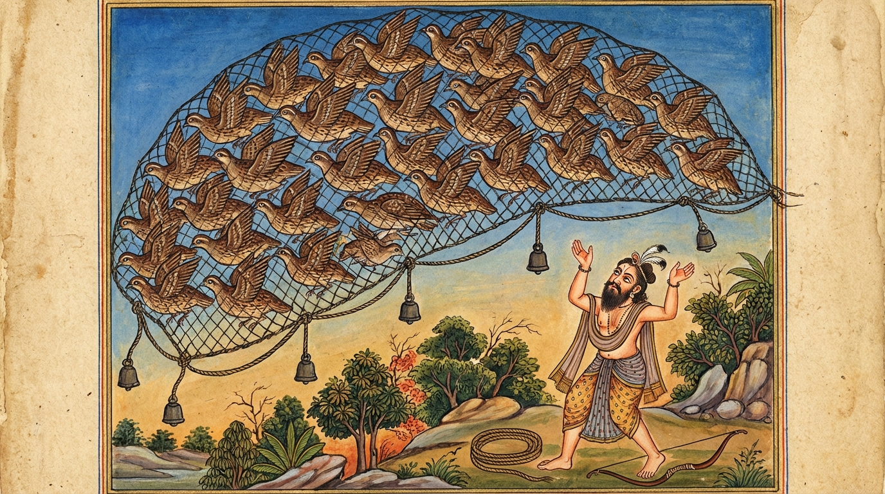

3. සම්මෝදමාන ජාතකය (33)
“සම්මොදමානා” යන මේ දේශනාව බුදුරජාණන් වහන්සේ කිඹුල්වත් පුර ඇසුරු කොට නිග්රෝධාරාමයෙහි වැඩවසන සමයෙහි, (ගොවීන් හා කෝලිය වංශිකයන් අතර හටගත්) දිය පාලනය සම්බන්ධ කලහයක් අරබයා දේශනා කරන ලදී. ඒ පුවත කුණාල ජාතකයෙහි (Jā. 2.21) විස්තර වන්නේය. එදා බුදුරජාණන් වහන්සේ ඥාතීන් අමතා, “මහාරාජවරුනි, ඥාතීන් අතර ඔවුනොවුන් විරසක වීම නුසුදුසුය. පෙර තිරිසන් සතුන් පවා සමගිව සිටි කාලයෙහි පසමිතුරන් අභිබවා යහපත සලසා ගත්හ. යම් කලෙක ඔවුනොවුන් වාද විවාද කර ගත්තේද, එකල්හි මහත් විනාශයකට පත් වූහ,” යැයි වදාරා ඥාති රජවරුන් විසින් අයදින ලදුව අතීත කතාව ගෙනහැර දැක්වූ සේක.
අතීතයෙහි බරණැස් නුවර බ්රහ්මදත්ත රජු රාජ්යය කරවන කල්හි, බෝධිසත්වයෝ වටු යෝනියෙහි ඉපිද, නොයෙක් දහස් ගණන්
වටුවන් පිරිවරා වනයෙහි වාසය කළහ. එකල එක් වටු වැද්දෙක් වටුවන් වසන ස්ථානයට ගොස් වටු හඬක් නඟා, ඔවුන් රැස්වූ බව
දැන, ඔවුන් මතුපිට දැලක් එළා, දැලේ කෙළවර පාගමින් සියල්ලන් එකට එක් කොට, පැස පුරවාගෙන ගෙදර ගොස්, වටුවන් විකුණා
ලැබෙන මුදලින් ජීවිකාව ගෙන යයි.
දිනක් බෝධිසත්වයෝ ඒ වටුවන්ට මෙසේ කීහ. “මේ වටු වැද්දා අපගේ නෑයන් විනාශ
කරයි. වැද්දාට අප අල්ලා ගැනීමට නොහැකි වන එක් උපායක් මම දනිමි. මින් මතු වැද්දා ඔබ මතුපිට දැල දැමූ කල්හි,
එකිනෙකා එක එක දැල් සිදුරෙන් හිස තබා, දැල ඔසවාගෙන කැමති තැනකට පියාඹා ගොස්, කටු ලැහැබක දැල රඳවන්න. මෙසේ කළ විට
යටින් ඒ ඒ තැනින් පලා යන්නෙමු.”
වටු පිරිස ද, “යහපතැ”යි ඊට එකඟ වූහ. දෙවැනි දිනයෙහි වැද්දා වටුවන් මතුපිට
දැල එළූ කල, බෝධිසත්වයන් කී පරිදිම දැල ඔසවාගෙන ගොස් එක් කටු ලැහැබක දමා, දැල යටින් තැන් තැන්වලින් පලා ගියහ.
කුරුළු වැද්දා කටු ලැහැබින් දැල මුදා ගන්නා විටම සවස් විය. ඔහු හිස් අතින්ම ගියේය.

පසු දින පටන් වටුවෝ එසේම කරති. වැද්දා ද හිරු බැස යන තෙක් දැල මුදාගැනීම පමණක් කරමින්, කිසිවක් නොලැබ හිස් අතින්ම
ගෙදර යයි. එවිට වටු වැද්දාගේ බිරිඳ කිපී, “ඔබ දිනපතාම එන්නේ හිස් අතිනි. මට සිතෙන පරිදි පිටත ඔබට පෝෂණය කළ යුතු
වෙනත් තැනක් ඇති බව හැඟේ,” යැයි කීවාය.
වටු වැද්දා ඊට පිළිතුරු දෙමින්, “සොඳුර, මට පෝෂණය කළ යුතු වෙනත්
තැනක් නැත. එසේ වුවත් මේ වටුවෝ දැන් සමගිව හැසිරෙති. මා දැල දැමූ කෙණෙහිම ඔවුහු දැල ඔසවාගෙන ගොස් කටු ලැහැබක දමා
පලා යති. එහෙත් මොවුහු හැමදාම මෙසේ සමගිව සතුටින් නොහැසිරෙන්නෝය. එම නිසා නුඹ නොසිතන්න. යම් දවසක ඔවුන්
ඔවුනොවුන් වාද විවාද කරත්ද, එදා ඒ සියල්ලන්ම අල්ලාගෙනවිත් නුඹේ මුහුණ සිනා ගන්වමින් එන්නෙමි,” යැයි පවසා බිරිඳට
මේ ගාථාව කීය:
“සතුටින් සමගි වූ පක්ෂීහු (එකමුතුව) දැල ද රැගෙන යති. යම් දවසක ඔවුහු වාද විවාද කරත් ද, එදා ඔවුහු මාගේ වසඟයට පැමිණෙන්නාහ.”
එහි “යදා තෙ විවදිස්සන්ති” යන්නෙන් අදහස් කරන්නේ, යම් කලෙක ඒ වටුවෝ විවිධ මත ඇත්තෝව, විවිධ පැති ගත්තෝව වාද විවාද කෙරෙත් ද, කලහ කරත් ද යන අර්ථයයි. “තදා එහින්ති මෙ වසන්ති” යනු, ඒ කාලයෙහි ඒ සියල්ලෝම මගේ වසඟයට (ගොදුර බවට) එන්නාහ. එවිට මම ඔවුන් අල්ලාගෙන නුඹේ මුහුණ සතුටු කරමින් එන්නෙමි යි සිය බිරිඳ සැනසූහ.
දින කිහිපයක් ඇවෑමෙන් එක් වටුවෙක් ගොදුරු බිමට බසින විට, නොසැලකිලිමත්කම නිසා වෙනත් වටුවෙකුගේ හිස පෑගුවේය. අනෙක්
වටුවා “කවුද මගේ හිස පෑගුවේ?” යැයි කිපුණේය. “මම නොදැන පෑගුවේ, කිපෙන්න එපා,” යැයි කී නමුත් ඔහු දිගින් දිගටම
කෝප විය. ඔවුහු පුන පුනා කියමින්, “මට හිතෙන්නේ (තනිවම) දැල ඔසවන්නේ නුඹ තමයි,” යැයි කියමින් ඔවුනොවුන් විවාද
කළහ.
මොවුන් මෙසේ දබර කරද්දී බෝධිසත්වයෝ සිතූහ: “දබර කරන්නන් අතර ආරක්ෂාවක් නැත. මොවුන් දැන් දැල ඔසවන්නේ
නැත. ඒ නිසා මහත් විනාශයකට පත් වන්නාහ. වටු වැද්දාට අවස්ථාවක් ලැබෙන්නේය. මට මෙහි විසිය නොහැක.” හෙතෙම තම පිරිස
රැගෙන වෙනත් තැනකට ගියේය.
වටු වැද්දා ද ටික දිනකට පසු පැමිණ වටු හඬින් හඬා, ඔවුන් එක්තැන් වූ කල්හි ඔවුන්
මතුපිට දැල දැමුවේය. එවිට එක් වටුවෙක්, “නුඹ දැල ඔසවන විට (බරට) නුඹේ හිසෙන් ලොම් වැටෙනවාලු, දැන් ඉතින්
ඔසවපන්,” යැයි කීය. අනෙකා, “නුඹ දැල ඔසවන විට පියාපත් දෙකෙන් පිහාටු හැලෙනවාලු, දැන් ඉතින් ඔසවපන්,” යැයි කීය.
මෙසේ ඔවුන් “නුඹ ඔසවපන්, නුඹ ඔසවපන්” යැයි කියමින් සිටියදීම, වටු වැද්දා දැල ඔසවා ඒ සියල්ලන්ම එකතු කොට, පැස
පුරවාගෙන, බිරිඳ සතුටු කරමින් නිවසට ගියේය.
බුදුරජාණන් වහන්සේ, “මහාරාජවරුනි, මේ ආකාරයෙන් ඥාතීන් අතර කලහ කිරීම නුසුදුසුය. කලහය විනාශයට මුල වේ,” යැයි මේ ධර්ම දේශනාව ගෙනහැර දක්වා, පූර්වාපර සන්ධි ගළපා ජාතකය සමාප්ත කළ සේක. “එකල අඥාන වටුවා වූයේ දැන් මේ දේවදත්තය. නුවණැති වටුවා වූයේ මම ම වෙමි.”
තුන්වන වූ සම්මෝදමාන ජාතක වර්ණනාවයි.